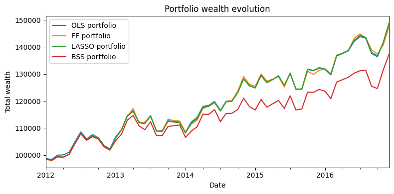

LASSO Beats Higher In-Sample Fit LASSO 在样本外击败更高拟合模型
A rolling factor-model test comparing OLS, Fama-French, LASSO, and BSS as inputs to long-only MVO portfolios. 用滚动窗口比较 OLS、Fama-French、LASSO 和 BSS 作为 long-only MVO 投资组合输入时的样本外表现。
Factor Models
MVO
Model Validation
Open note打开笔记